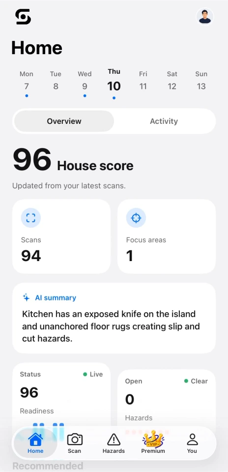
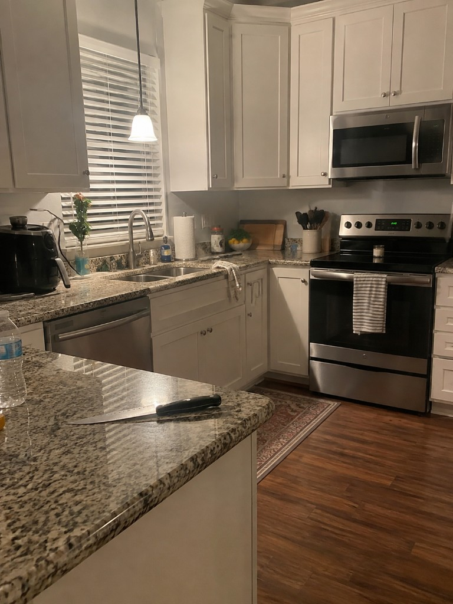
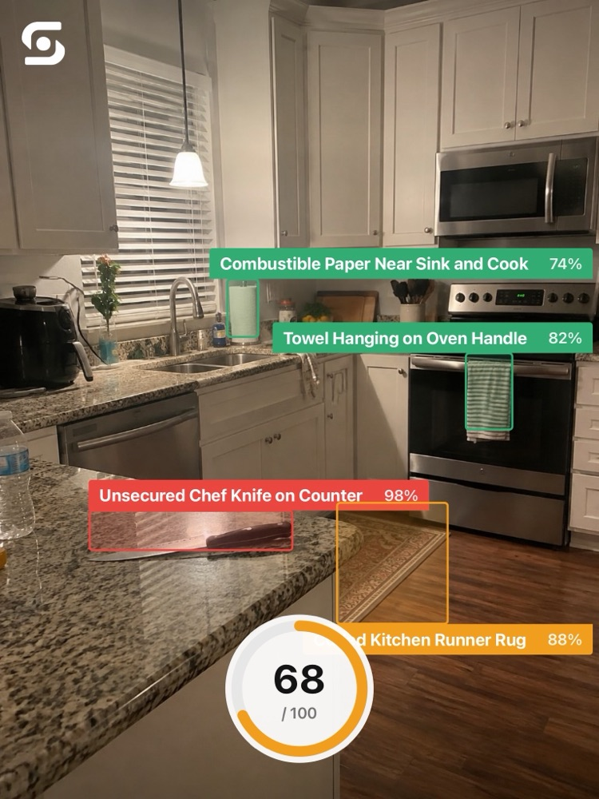

Take a room photo
Point your camera at your space or choose an existing photo.
Spot potential hazards in a room photo, and see what to fix.
Understand what needs
your attention, and why.

A familiar room can hide things you’ve stopped noticing.
Safesight helps you take a fresh look.
Point your camera at your space or choose an existing photo.
See potential hazards, their severity, and why they matter.
Follow the suggested fixes, then scan again to review your progress.

Know what you're looking at, why it matters, and what you can change.
A loose blade on a busy kitchen surface can be easy to overlook.
Store the knife in a knife block, sheath, or designated drawer after use.
A single view of your latest scans helps you keep track of what needs attention.
Keep your open hazards in one place. Mark them as fixed, then re-scan to check the change.
Share what you found with the people who can help, from your household to your landlord.

View an example reportHelpful technology. Honest expectations.
Safesight looks for visible potential risks in room photos, such as exposed sharp objects, trip hazards, blocked exits, and possible electrical or fire hazards. What it can identify depends on what is visible in the photo.
No. Safesight is an awareness tool. AI can miss hazards or flag something incorrectly, and a photo cannot show every risk. Use your own judgment and consult a qualified professional when needed.
Yes. The web demo lets you upload a room photo and try the app's core analysis. It does not include every feature of the iOS experience.
Safesight isn’t available on the App Store yet. The app is scheduled to launch in October 2026. In the meantime, explore the web demo and visit the project on Devpost for more information.
Room images are sent to a backend server and analyzed with Google Gemini. You can read the project's privacy policy for more detail before trying the demo.
Read the privacy policyTake a fresh look at the spaces you know best.
Try SafesightYour next step toward a safer space.